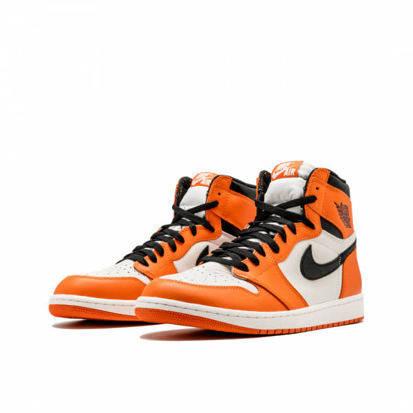

Lab 11: Advanced Block-level Styling I
CHALLENGE
In this lab we worked on using ids to style our page and trying out some new tricks.
PROBLEMS
I had some trouble with getting the sidebar to work properly but I was able to figure it out after reviewing the recording of last class.
RESULTS
My webpage now has a new look with the sidebar and sticky links.
